Healer
Healer is Thorium's support class: scythes and wands for damage, plus tools that heal you and your allies. Each stage lists damage weapons and support tools separately.
Markers: † risky to get · C crowd control · + support · ≤ has upgrades · * tedious to get · ν needs the Void subclass · Ω use together · Δ changed by Calamity · ≈ placed by rarity, may be a stage off · italic = Revengeance Mode or higher. Numbers in brackets are base damage. All-class armor follows the class sets on each armor line.
Hover or tap an item to see where it comes from, or switch on the option above to list every source.
Pre-Hardmode
1 Pre-Eye of Cthulhu
Bosses The Grand Thunder Bird
The Grand Thunder Bird King Slime
King Slime Desert Scourge
Desert Scourge Giant Clam
Giant Clam Lepus
Lepus Eye of Cthulhu
Eye of Cthulhu
- Weapons
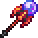
Deep StaffOpened from Scarlet Crate, Sinister Crate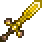
Heretic Breaker *Craft at Anvil: any Gold Bar ×8, Purified Shards ×8- Purified Water *Craft at Placed Bottle: Bottled Water ×5, Purified Shards ×2
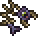
Rotten Cod *Fishing in the Corruption (very rare catch)- Ice ShaverCraft at Work Bench: Icy Shard ×8
- Palm CrossCraft at Work Bench: any Copper Bar ×5, Fallen Star, Chain ×2
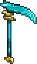
Thorium Heavy ScytheCraft at Thorium Anvil: Thorium Bar ×8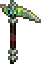
Wulfrum Weed WackerCraft at Anvil: Wulfrum Metal Scrap ×10
- Support tools
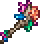
Coral PurifierCraft at Anvil: Coral ×7- Heart WandCraft at Anvil: any Gold Bar ×8, Life Quartz ×6
- Renew *Craft at Bookcase: Book, Purified Shards ×10, Healing Potion ×5
- SyringeCraft at Work Bench: Blood, any Iron Bar ×2Sold by Spiritualist
- The Giga NeedleCraft at Anvil: Blood ×4, any Silver Bar ×8
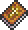
The Good Book *Drops from Patch Werk
- Armor
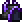
Ebon armor *Craft at Work Bench (whole set): Silk ×12, Unholy Shards ×32- Coral armorCraft at Anvil (whole set): Coral ×24
- Novice Cleric's armor *Craft at Work Bench (whole set): Silk ×12, Purified Shards ×12
All-class Ancient Shadow armor *Rare drop from Eaters of Souls in the Corruption
Ancient Shadow armor *Rare drop from Eaters of Souls in the Corruption Frigid armor *Craft at Anvil (whole set): Frigid Bar ×36
Frigid armor *Craft at Anvil (whole set): Frigid Bar ×36 Gold armorCraft at Anvil (whole set): Gold Bar ×75 /
Gold armorCraft at Anvil (whole set): Gold Bar ×75 /  Platinum armorCraft at Anvil (whole set): Platinum Bar ×75
Platinum armorCraft at Anvil (whole set): Platinum Bar ×75 Lead armorCraft at Anvil (whole set): Lead Bar ×60
Lead armorCraft at Anvil (whole set): Lead Bar ×60 Thorium armorCraft at Thorium Anvil (whole set): Thorium Bar ×45
Thorium armorCraft at Thorium Anvil (whole set): Thorium Bar ×45 Vespera armor νCraft at Furnace (whole set): Evostone ×75, Stone Block ×225, Fragment of Earth ×3
Vespera armor νCraft at Furnace (whole set): Evostone ×75, Stone Block ×225, Fragment of Earth ×3
- Accessories
- Aquamarine RingCraft at Anvil: any Iron Bar, Aquamarine, Fallen Star
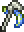
Harvester's ScytheCraft at Anvil: Vibrant Alloy ×4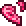
Life GemCraft at Anvil: Life Quartz ×15Drops from Life Crystal Mimic- Nurse's PurseDrops from NurseSold by Arms Dealer
- Buffs
 Mana PotionCraft at Placed Bottle: Lesser Mana Potion ×2, Glowing MushroomOpened from Pyramid CrateSold by Merchant (Hardmode)
Mana PotionCraft at Placed Bottle: Lesser Mana Potion ×2, Glowing MushroomOpened from Pyramid CrateSold by Merchant (Hardmode)
Permanent Mana CrystalCraft by hand: Fallen Star ×5
Mana CrystalCraft by hand: Fallen Star ×5 Arcane Crystal *Throw a Mana Crystal into Shimmer
Arcane Crystal *Throw a Mana Crystal into Shimmer
2 Pre-Eater of Worlds / Brain of Cthulhu
Bosses Glowmoth
Glowmoth Crabulon
Crabulon
 Eater of Worlds or Brain of Cthulhu
Eater of Worlds or Brain of Cthulhu
- Weapons
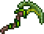
Bountiful HarvestCraft at Anvil: Jungle Spores ×10, Stinger ×4, Vine ×2- Corrosive FluxCraft at Anvil: Acidwood ×30, Sulphuric Scale ×12
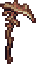
Dry MouthDrops from Desert Scourge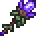
Shadow WandCraft at Arcane Armor Fabricator: Yew Wood ×10, Unholy Shards ×5, Amethyst ×2- Poison PricklerCraft at Anvil: The Giga Needle, Jungle Spores ×10
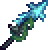
PrismaCraft at Anvil: Pearl Shard ×8, Sea Prism ×10, Navystone ×12- The DigesterOpened from Jungle Crate, Bramble Crate
- Support tools
- Coral PurifierCraft at Anvil: Coral ×7
- Heart WandCraft at Anvil: any Gold Bar ×8, Life Quartz ×6
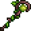
Life's GiftCraft at Anvil: Jungle Spores ×12, Vine ×4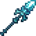
Lost OasisCraft at Anvil: Pearl Shard ×5, Sea Prism ×5, Navystone ×10- Renew *Craft at Bookcase: Book, Purified Shards ×10, Healing Potion ×5
- SyringeCraft at Work Bench: Blood, any Iron Bar ×2Sold by Spiritualist
- The Good Book *Drops from Patch Werk
- Support
 Brittle Star Staff (defensive)Drops from Desert Scourge
Brittle Star Staff (defensive)Drops from Desert Scourge
- Armor
- Blooming armorCraft at Arcane Armor Fabricator (whole set): Petal ×30, Jungle Spores ×14
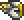
Iridescent armorCraft at Arcane Armor Fabricator (whole set): any Gold Bar ×36, White Pearl ×3, Purified Shards ×18 Victide armorCraft at Anvil (whole set): Sea Remains ×12
Victide armorCraft at Anvil (whole set): Sea Remains ×12
All-class- Ancient Shadow armor *Rare drop from Eaters of Souls in the Corruption
- Frigid armorCraft at Anvil (whole set): Frigid Bar ×36
- Gold armorCraft at Anvil (whole set): Gold Bar ×75 / Platinum armorCraft at Anvil (whole set): Platinum Bar ×75
- Lead armor †Craft at Anvil (whole set): Lead Bar ×60
- Vespera armor νCraft at Furnace (whole set): Evostone ×75, Stone Block ×225, Fragment of Earth ×3
- Accessories
- Aquamarine RingCraft at Anvil: any Iron Bar, Aquamarine, Fallen Star
- Crystal ArcaniteCraft at Tinkerer's Workshop: Purified Shards ×10, Life Gem, Mana Bauble
- Harvester's ScytheCraft at Anvil: Vibrant Alloy ×4
- Nurse's PurseDrops from NurseSold by Arms Dealer
- Buffs
- Mana PotionCraft at Placed Bottle: Lesser Mana Potion ×2, Glowing MushroomOpened from Pyramid CrateSold by Merchant (Hardmode)
3 Pre-Hive Mind / Perforators
Bosses Queen Jellyfish
Queen Jellyfish Viscount
Viscount
 The Hive Mind or The Perforators
The Hive Mind or The Perforators
- Weapons
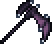
Bat ScytheDrops from Viscount- Bountiful HarvestCraft at Anvil: Jungle Spores ×10, Stinger ×4, Vine ×2
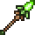
Life DisperserSold by Druid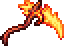
Molten ThresherCraft at Anvil: Hellstone Bar ×15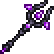
OmenCraft at Anvil: any Gold Bar ×10, Unholy Shards ×10, Hellstone Bar ×4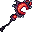
Red CrescentDrops from Viscount
- Support tools
- Dark GiftOpened from Dark Mage Treasure Bag
- Life's GiftCraft at Anvil: Jungle Spores ×12, Vine ×4
- Lost OasisCraft at Anvil: Pearl Shard ×5, Sea Prism ×5, Navystone ×10
- Renew *Craft at Bookcase: Book, Purified Shards ×10, Healing Potion ×5
- Support
- Brittle Star Staff (defensive)Drops from Desert Scourge
 Slime Gun +Opened from Treasure Bag (Queen Slime)
Slime Gun +Opened from Treasure Bag (Queen Slime)
- Armor
- Blooming armorCraft at Arcane Armor Fabricator (whole set): Petal ×30, Jungle Spores ×14
- Iridescent armorCraft at Arcane Armor Fabricator (whole set): any Gold Bar ×36, White Pearl ×3, Purified Shards ×18
All-class Crimson armorCraft at Anvil (whole set): Crimtane Bar ×60, Tissue Sample ×45
Crimson armorCraft at Anvil (whole set): Crimtane Bar ×60, Tissue Sample ×45 Depth Diver's armorCraft at Anvil (whole set): Aquaite Bar ×42
Depth Diver's armorCraft at Anvil (whole set): Aquaite Bar ×42 Shadow armorCraft at Anvil (whole set): Demonite Bar ×60, Shadow Scale ×45
Shadow armorCraft at Anvil (whole set): Demonite Bar ×60, Shadow Scale ×45
- Accessories
- Aquamarine RingCraft at Anvil: any Iron Bar, Aquamarine, Fallen Star
- Crystal ArcaniteCraft at Tinkerer's Workshop: Purified Shards ×10, Life Gem, Mana Bauble
- Harvester's ScytheCraft at Anvil: Vibrant Alloy ×4
- Nurse's PurseDrops from NurseSold by Arms Dealer
4 Pre-Skeletron
Bosses Queen Bee
Queen Bee Putrid Pinky
Putrid Pinky Deerclops
Deerclops Pharaoh's Curse
Pharaoh's Curse Skeletron
Skeletron
- Weapons
- Cursed Ankh Staff νCraft at Anvil: Cursed Matter ×8, Keystone Shard ×10
- C-TSL DefibrillatorCraft at Anvil: Mysterious Circuitry ×5, Dubious Plating ×4, Aerialite Bar ×3, Sea Prism ×6
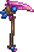
Goopwood ReapCraft at Anvil: Corrosive Gel ×32, Goopwood ×28Opened from Treasure Bag (Putrid Pinky)- Red CrescentDrops from Viscount
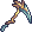
The WindmillCraft at Anvil: Aerialite Bar ×9, Sunplate Block ×3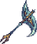
Wind ReaverCraft at Anvil: Sunplate Block ×8, Aerialite Bar ×10
- Support tools
- Dark GiftOpened from Dark Mage Treasure Bag
- Life's GiftCraft at Anvil: Jungle Spores ×12, Vine ×4
- Lost OasisCraft at Anvil: Pearl Shard ×5, Sea Prism ×5, Navystone ×10
- Renew *Craft at Bookcase: Book, Purified Shards ×10, Healing Potion ×5
- Support
 Aestheticus +Craft at Anvil: Aerialite Bar ×5, Sea Prism ×10, Fallen Star ×5
Aestheticus +Craft at Anvil: Aerialite Bar ×5, Sea Prism ×10, Fallen Star ×5- Brittle Star Staff (defensive)Drops from Desert Scourge
- Armor
 Aerospec armorCraft at Anvil (whole set): Aerialite Bar ×45, Feather ×5
Aerospec armorCraft at Anvil (whole set): Aerialite Bar ×45, Feather ×5- Blooming armorCraft at Arcane Armor Fabricator (whole set): Petal ×30, Jungle Spores ×14
- Iridescent armorCraft at Arcane Armor Fabricator (whole set): any Gold Bar ×36, White Pearl ×3, Purified Shards ×18
All-class- Crimson armorCraft at Anvil (whole set): Crimtane Bar ×60, Tissue Sample ×45
- Depth Diver's armorCraft at Anvil (whole set): Aquaite Bar ×42
- Shadow armorCraft at Anvil (whole set): Demonite Bar ×60, Shadow Scale ×45
- Accessories
- Crystal HoneyCraft at Tinkerer's Workshop: Purified Shards ×10, Life Gem, Honey Block ×15
- Harvester's ScytheCraft at Anvil: Vibrant Alloy ×4
- Life GemCraft at Anvil: Life Quartz ×15Drops from Life Crystal Mimic
- Nurse's PurseDrops from NurseSold by Arms Dealer
5 Pre-Slime God
Bosses Turkor the Ungrateful
Turkor the Ungrateful Granite Energy Storm
Granite Energy Storm Buried Champion
Buried Champion The Slime God
The Slime God
- Weapons
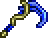
Bone ReaperOpened from Golden Lock Box- Cursed Ankh Staff νCraft at Anvil: Cursed Matter ×8, Keystone Shard ×10
- C-TSL DefibrillatorCraft at Anvil: Mysterious Circuitry ×5, Dubious Plating ×4, Aerialite Bar ×3, Sea Prism ×6
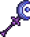
Light's LamentOpened from Obsidian Lock Box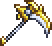
Marble ScytheCraft at Anvil: Enchanted Marble ×3, Bronze Alloy Fragments ×8, Spirit Droplet ×10- Red CrescentDrops from Viscount
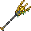
Serpentine ForkCraft at Anvil: Trident, Abyss Gravel ×5, Planty Mush ×5, Bone ×3Opened from Hydrothermal Crate, Sulphurous Crate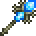
Spirit Blast WandCraft at Anvil: Bone ×18, Spirit Droplet ×8- Templar's JudgementCraft at Anvil: Darksteel Ingot ×10, Life Quartz ×4
- The WindmillCraft at Anvil: Aerialite Bar ×9, Sunplate Block ×3
- Wind ReaverCraft at Anvil: Sunplate Block ×8, Aerialite Bar ×10
- Support tools
- Dark GiftOpened from Dark Mage Treasure Bag
- Life's GiftCraft at Anvil: Jungle Spores ×12, Vine ×4
- Lost OasisCraft at Anvil: Pearl Shard ×5, Sea Prism ×5, Navystone ×10
- Renew *Craft at Bookcase: Book, Purified Shards ×10, Healing Potion ×5
- Support
- Aestheticus +Craft at Anvil: Aerialite Bar ×5, Sea Prism ×10, Fallen Star ×5
- Brittle Star Staff (defensive)Drops from Desert Scourge
- Armor
- Aerospec armorCraft at Anvil (whole set): Aerialite Bar ×45, Feather ×5
- Templar's armorCraft at Anvil (whole set): Darksteel Ingot ×36, Life Quartz ×12
All-class Darksteel armorCraft at Anvil (whole set): Darksteel Ingot ×48
Darksteel armorCraft at Anvil (whole set): Darksteel Ingot ×48- Depth Diver's armorCraft at Anvil (whole set): Aquaite Bar ×42
 Granite armorCraft at Anvil (whole set): Granite Energy Core ×48
Granite armorCraft at Anvil (whole set): Granite Energy Core ×48
- Accessories
- Crystal HoneyCraft at Tinkerer's Workshop: Purified Shards ×10, Life Gem, Honey Block ×15
- Harvester's ScytheCraft at Anvil: Vibrant Alloy ×4
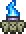
Inner FlameCraft at Tinkerer's Workshop: Bone ×30, Spirit Droplet ×15- Life GemCraft at Anvil: Life Quartz ×15Drops from Life Crystal Mimic
- Nurse's PurseDrops from NurseSold by Arms Dealer
6 Pre-Wall of Flesh
Bosses The Excavator
The Excavator The Advisor
The Advisor Star Scouter
Star Scouter Wall of Flesh
Wall of Flesh
- Weapons
- Cursed Ankh Staff νCraft at Anvil: Cursed Matter ×8, Keystone Shard ×10
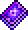
Dark ContagionCraft at Bookcase: Unholy Shards ×10, Purified Gel ×5, Deathweed ×2- C-TSL DefibrillatorCraft at Anvil: Mysterious Circuitry ×5, Dubious Plating ×4, Aerialite Bar ×3, Sea Prism ×6
- DualityCraft at Solidifier: Purified Gel ×15, Blighted Gel ×15
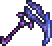
Falling TwilightCraft at Demon Altar: Downward Spiral, Bone Reaper, Bountiful Harvest, Molten Thresher /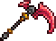
Blood HarvestCraft at Demon Altar: The Blender, Bone Reaper, Bountiful Harvest, Molten Thresher- Jelly SlicerCraft at Anvil: Purified Gel ×12
- Light's LamentOpened from Obsidian Lock Box
- Marble ScytheCraft at Anvil: Enchanted Marble ×3, Bronze Alloy Fragments ×8, Spirit Droplet ×10
- Red CrescentDrops from Viscount
- Serpentine ForkCraft at Anvil: Trident, Abyss Gravel ×5, Planty Mush ×5, Bone ×3Opened from Hydrothermal Crate, Sulphurous Crate
- Spirit Blast WandCraft at Anvil: Bone ×18, Spirit Droplet ×8
- Templar's JudgementCraft at Anvil: Darksteel Ingot ×10, Life Quartz ×4
- Support tools
- Dark GiftOpened from Dark Mage Treasure Bag
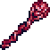
Gelatin TherapyCraft at Solidifier: Purified Gel ×15, Blighted Gel ×15Drops from The Slime God- Life's GiftCraft at Anvil: Jungle Spores ×12, Vine ×4
- Lost OasisCraft at Anvil: Pearl Shard ×5, Sea Prism ×5, Navystone ×10
- Renew *Craft at Bookcase: Book, Purified Shards ×10, Healing Potion ×5
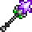
Star RodDrops from Star Scouter
- Support
- Aestheticus +Craft at Anvil: Aerialite Bar ×5, Sea Prism ×10, Fallen Star ×5
- Brittle Star Staff (defensive)Drops from Desert Scourge
- Armor
- Templar's armorCraft at Anvil (whole set): Darksteel Ingot ×36, Life Quartz ×12
 Statigel armorCraft at Solidifier (whole set): Purified Gel ×34, Blighted Gel ×34
Statigel armorCraft at Solidifier (whole set): Purified Gel ×34, Blighted Gel ×34
All-class- Darksteel armorCraft at Anvil (whole set): Darksteel Ingot ×48
- Depth Diver's armorCraft at Anvil (whole set): Aquaite Bar ×42
- Accessories
- Crystal HoneyCraft at Tinkerer's Workshop: Purified Shards ×10, Life Gem, Honey Block ×15
- Harvester's ScytheCraft at Anvil: Vibrant Alloy ×4
- Inner FlameCraft at Tinkerer's Workshop: Bone ×30, Spirit Droplet ×15
- Life GemCraft at Anvil: Life Quartz ×15Drops from Life Crystal Mimic
- Nurse's PurseDrops from NurseSold by Arms Dealer
The pack's SOTS Bard, Thrower and Healer add-on changes what Harvester's Scythe does, so read its tooltip in game.
Hardmode
From here the lists are read from the pack's installed mod files: every Healer weapon, support tool, armor piece and accessory in the pack, placed at the stage its recipe or boss drop first becomes available under this pack's recipe changes. Numbers are base damage after the pack's balance changes, and a boss name means the item drops there. ≈ marks an item placed by rarity alone because it comes from an ordinary enemy, chest or shop, so it can be a stage off.
Every Hardmode stage uses Altar, Glowing Potion and Holy Potion.
7 Pre-Mechanical Bosses
Bosses Borean Strider
Borean Strider Fallen BeholderDreadnautilus
Fallen BeholderDreadnautilus Queen Slime
Queen Slime Cryogen
Cryogen

 first mechanical boss
first mechanical boss
- Thorium weapons
- Sacred Bludgeon (65)Craft at Anvil: Hallowed Charm ×10, Purified Shards ×8
- Lustrous Baton (54)Craft at Anvil: Pearlstone Block ×35, Crystal Shard ×10, Soul of Night ×5
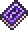
Wild Umbra (48)Craft at Bookcase: Spell Tome, Unholy Shards ×10, Pixie Dust ×10- Balance Bloom ≈ (45)Craft at Mythril Anvil: Petal ×18, Light Shard, Dark Shard
- Cursed Hammer ≈ (44)Reward for the Tracker's contract "Enchanted Engagement"
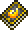
Holy Fire (40)Craft at Bookcase: Spell Tome, Purified Shards ×5, Cursed Flame ×10- Sacred Lyre (40)Craft at Anvil: Hallowed Charm ×10, Purified Shards ×8
- Blood Transfusion (36)Craft at Bookcase: Spell Tome, Blood Cell ×6
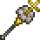
Heavenly Cloud Scepter ≈ (30)Sold by Spiritualist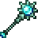
Iridescent Staff (25)Craft at Anvil: Aquaite Bar ×10, White Pearl, Pixie Dust ×15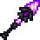
Midnight Staff (20)Craft at Anvil: Soul of Night ×10, Crystal Shard ×6, Dark Shard
- Crossmod weapons
- Infernal Arsenal
- Bottle of Souls (40, Wall of Flesh)Drops from Wall of Flesh
Thorium Bosses Reworked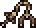
Lodestone Magnet Mace (70)Craft at Anvil: Lodestone Ingot ×8
- Support tools
- Thorium
- Aura StaffCraft at Anvil: Soul of Light ×10, Crystal Shard ×6, Light Shard
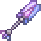
Crystal Wish ≈Craft at Mythril Anvil: Purified Shards ×8, Crystal Geode ×8- Flan Platter ≈Sold by Cook
- Glittering ScepterCraft at Anvil: Crystal Geode ×9
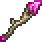
Light-Burst WandCraft at Anvil: Pearlwood ×20, Soul of Light ×5- Moonlight Staff ≈Drops from Lycan
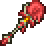
Necrotic StaffCraft at Anvil: Blood Cell ×7- Null-Zone StaffCraft at Anvil: any Silver Bar ×10, Purified Shards ×5, Crystal Shard ×8, Light Shard
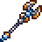
Sacred ChargeCraft at Anvil: Hallowed Charm ×8, Purified Shards ×6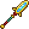
Serpent's Bubble WandCraft at Anvil: Abyssal Chitin ×10- TwinkleCraft at Work Bench: Pixie Dust ×50, Soul of Light ×8
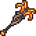
Void Planter (Fallen Beholder)Drops from Fallen Beholder
Calamity Bard & Healer- School Nurse (Cryogen)Drops from Cryogen
- Class armor
- Thorium
- Sacred set (3 pieces)Craft at Anvil (whole set): Hallowed Charm ×30, Purified Shards ×24
- Warlock set (3 pieces) ≈Sold by Spiritualist
- Class accessories
- Thorium
- Cleric Emblem ≈Drops from Wall of FleshShimmer transmutation of Ninja Emblem
- Dark GlazeCraft at Tinkerer's Workshop: Dark Intent, Crystal Honey
- Dark IntentCraft at Tinkerer's Workshop: Soul of Night ×8, Dark Shard ×2
- Demon Tongue ≈Drops from Demon, Red Devil, Voodoo Demon
- Equalizer ≈Craft at Tinkerer's Workshop: Pacifist Necklace, Aloe Leaf, Honey Heart
- Rebirth Statuette ≈Sold by Spiritualist
- Seraphim IdolCraft at Tinkerer's Workshop: Purified Shards ×10, Pixie Dust ×12, Feather ×6
- All-class armor
 Crystal Assassin armorDrops from Queen Slime
Crystal Assassin armorDrops from Queen Slime Dragon's armorCraft at Mythril Anvil (whole set): Green Dragon Scale ×45 /
Dragon's armorCraft at Mythril Anvil (whole set): Green Dragon Scale ×45 /  Flesh armorCraft at Anvil (whole set): Unfathomable Flesh ×45
Flesh armorCraft at Anvil (whole set): Unfathomable Flesh ×45 Durasteel armorSold by Blacksmith
Durasteel armorSold by Blacksmith Mollusk armor †Craft at Anvil (whole set): Mollusk Husk ×31, Sea Prism ×60
Mollusk armor †Craft at Anvil (whole set): Mollusk Husk ×31, Sea Prism ×60
8 Post-Mechanical Boss 1
Bosses Aquatic Scourge
Aquatic Scourge

 second mechanical boss
second mechanical boss
- Thorium weapons
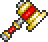
Smiting Hammer ≈ (139)Craft at Mythril Anvil: Hallowed Bar ×12, Soul of Plight ×10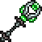
Life Surge Staff (40)Craft at Mythril Anvil: Strange Plating ×6, Life-Powered Energy Cell- Twilight Staff (40)Craft at Mythril Anvil: any Adamantite Bar ×12, Light Shard, Dark Shard, Purified Shards ×5, Unholy Shards ×5
- Li'l Devil's Wand ≈ (20)Sold by Spiritualist
- Crossmod weapons
- Calamity Bard & Healer
- S-TSL: Electric Quarterstaff (32)Craft at Mythril Anvil: Mysterious Circuitry ×15, Dubious Plating ×5, any Mythril Bar ×10, Soul of Sight ×20
- Cotton Mouth (30, Aquatic Scourge)Drops from Aquatic Scourge
Ragnarok- Glacial Harvester ≈ (50)Sold by Archmage
Thorium Bosses Reworked- Valadium Heavy Scythe (100)Craft at Mythril Anvil: Valadium Ingot ×8
- Support tools
- Thorium
- Defender's Wand ≈Craft at Mythril Anvil: Eternia Crystal, Defender Medal ×10, Sentinel's Wand
- LiberationCraft at Anvil: Forbidden Fragment ×2, Pharaoh's Breath ×6, Purified Shards ×8
- Life Essence ApparatusCraft at Mythril Anvil: Strange Plating ×6, Life-Powered Energy Cell
- Pocket GuardianCraft at Mythril Anvil: Strange Plating ×6, Life-Powered Energy Cell
- Ra's WhisperCraft at Anvil: Forbidden Fragment ×2, Pharaoh's Breath ×6, Purified Shards ×5
- Recuperate ≈Sold by Spiritualist
- Sunray Staff ≈Drops from Le Fantôme
- Tesla Defibrillator ≈Drops from Frankenstein
Thorium Bosses Reworked- Chiron's Cure ≈Drops from Hallowed Mimic
- Duke Fish ≈Drops from Submerged Mimic
- Class accessories
- Thorium
- Ascension Statuette ≈Sold by Spiritualist
- Karmic HolderCraft at Tinkerer's Workshop: Forbidden Fragment ×2, Pharaoh's Breath ×6, Pearlsand Block ×25
- Nirvana Statuette ≈Craft at Tinkerer's Workshop: Purified Shards ×10, Ascension Statuette, Rebirth Statuette
Thorium Bosses Reworked- Valkyrien Sky StoneCraft at Mythril Anvil: Star Scout Reticle, Bannerof War, Bandof Cratons
- All-class armor
- Crystal Assassin armorDrops from Queen Slime
- Dragon's armorCraft at Mythril Anvil (whole set): Green Dragon Scale ×45 / Flesh armorCraft at Anvil (whole set): Unfathomable Flesh ×45
- Durasteel armorSold by Blacksmith
- Mollusk armor †Craft at Anvil (whole set): Mollusk Husk ×31, Sea Prism ×60
9 Post-Mechanical Boss 2
Bosses Brimstone Elemental
Brimstone Elemental

 third mechanical boss
third mechanical boss
- Crossmod weapons
- Calamity Bard & Healer
- Cold Shoulder (59)Craft at Mythril Anvil: Cryonic Bar ×12
Ragnarok- Brimscythe (40, Brimstone Elemental)Drops from Brimstone Elemental
- Support tools
- Thorium
- Life Pulse Staff ≈Sold by Spiritualist
- Class armor
- Calamity Bard & Healer
- Daedalus CowlCraft at Mythril Anvil: Cryonic Bar ×12
Ragnarok- Daedalus VisageCraft at Mythril Anvil: Cryonic Bar ×12, Essence of Eleum
- Class accessories
- Thorium
- Turn Undead ≈Craft at Tinkerer's Workshop: Fear Monger, Ancient Aegis
Thorium Bosses Reworked- Heart of the Beholder ≈Craft at Mythril Anvil: Life Gem, Dark Heart, Void Heart
- All-class armor
- Crystal Assassin armorDrops from Queen Slime
- Dragon's armorCraft at Mythril Anvil (whole set): Green Dragon Scale ×45 / Flesh armorCraft at Anvil (whole set): Unfathomable Flesh ×45
- Durasteel armorSold by Blacksmith
- Mollusk armor †Craft at Anvil (whole set): Mollusk Husk ×31, Sea Prism ×60
10 Pre-Polaris
Bosses Polaris
Polaris
- Thorium weapons
- Mind Melter (125)Craft at Mythril Anvil: Hallowed Bar ×10, Unholy Shards ×12, Soul of Fright ×6
- Hallowed Blessing (90)Craft at Mythril Anvil: Hallowed Bar ×12
- True Hallowed Scythe (54)Craft at Mythril Anvil: Hallowed Scythe
- Hallowed Scythe (44)Craft at Mythril Anvil: Hallowed Bar ×12
- Support tools
- Thorium
- Holy StaffCraft at Mythril Anvil: Hallowed Bar ×18, Purified Shards ×15
- Whispering DaggerCraft at Mythril Anvil: Void Heart, Hallowed Bar ×15, Unholy Shards ×15, Soul of Night ×10
- Class armor
- Thorium
- Biotech set (3 pieces)Craft at Mythril Anvil (whole set): Hallowed Bar ×36, Life-Powered Energy Cell ×6
- Class accessories
- Thorium
- Archangel's Heart ≈Craft at Tinkerer's Workshop: Cleric Emblem, Crystal Arcanite, Seraphim Idol, Soul of Might ×5, Soul of Sight ×5, Soul of Fright ×5
- Archdemon's Curse ≈Craft at Tinkerer's Workshop: Cleric Emblem, Dark Glaze, Seraphim Idol, Soul of Might ×5, Soul of Sight ×5, Soul of Fright ×5
- Prydwen ≈Craft at Tinkerer's Workshop: Blacksmith's Barrier, Purified Shards ×15, Hallowed Bar ×10
- All-class armor
- Dragon's armorCraft at Mythril Anvil (whole set): Green Dragon Scale ×45 / Flesh armorCraft at Anvil (whole set): Unfathomable Flesh ×45
- Durasteel armorSold by Blacksmith
- Mollusk armor †Craft at Anvil (whole set): Mollusk Husk ×31, Sea Prism ×60
11 Pre-Plantera
Bosses Lich
Lich Calamitas Clone
Calamitas Clone Plantera
Plantera
- Thorium weapons
- Bone Baton (60)Craft at Anvil: Bone ×30, Soul of Plight ×10
- Crossmod weapons
- Calamity Bard & Healer
- Fire Hazard (30, Calamitas Clone)Drops from Calamitas Clone
- Slag Fury's Intent (22)Craft at Anvil: Unholy Core ×7, Soul of Plight ×7
Infernal Arsenal- List of the Damned (80, Lich)Drops from LichOpened from Lich Treasure Bag
SOTS Bard & Healer- Turbo Slicer (62)Craft at Mythril Anvil: Absolute Alloy ×10, Ice Shaver, Aquaite Scythe
Thorium Bosses Reworked- Soul Snatcher (150, Lich)Drops from LichOpened from Lich Treasure Bag
- Support tools
- Thorium
- Barrier GeneratorCraft at Soul Forge: Strange Plating ×12
- Class accessories
- Thorium
- Forgotten Cross NecklaceCraft at Tinkerer's Workshop: Cross Necklace, The Lost Cross
- All-class armor
- Crystal Assassin armorDrops from Queen Slime
- Dragon's armorCraft at Mythril Anvil (whole set): Green Dragon Scale ×45 / Flesh armorCraft at Anvil (whole set): Unfathomable Flesh ×45
- Durasteel armorSold by Blacksmith
- Mollusk armor †Craft at Anvil (whole set): Mollusk Husk ×31, Sea Prism ×60
12 Pre-Golem
Bosses Leviathan and Anahita
Leviathan and Anahita Astrum Aureus
Astrum Aureus Ocram
Ocram Golem
Golem
- Thorium weapons
- Christmas Cheer (240)Drops from Blood Butcherer
- The Effuser (152)Craft at Mythril Anvil: Chlorophyte Bar ×12, Bio Matter ×2
- Spirit Bender's Staff (100)Craft at Mythril Anvil: Spectre Bar ×12
- Morning Dew (80)Craft at Mythril Anvil: Chlorophyte Bar ×10, Bio Matter ×2
- Illumite Scythe (71)Craft at Soul Forge: Illumite Ingot ×8
- Scythe of Undoing ≈ (60)Craft at Demon Altar: Sickle, Blood ×30, Cursed Cloth ×8, Soul of Fright ×16
- Demon Blood Ripper (36)Craft at Soul Forge: Demon Blood Shard ×8
- Samsara Lotus (28, Plantera)Sold by Traveling MerchantShimmer transmutation of Divine Lotus
- Crossmod weapons
- Calamity Bard & Healer
- Tidal Force (231, Leviathan and Anahita)Drops from Anahita, The LeviathanOpened from Treasure Bag (Leviathan and Anahita)
- Trinity (78, Astrum Aureus)Drops from Astrum Aureus
- Aquaius' Advice (42)Craft at Anvil: Aquaite Bar ×9, Sea Remains ×2, Depth Cells ×6, Abyssal Chitin ×3
Infernal Arsenal- The Blight (140)Craft at Soul Forge: Aureus Cell ×10, Hallowed Scythe, Soul of Sight ×5, Soul of Might ×5, Soul of Fright ×5, Soul of Night ×8, Bone ×12, Cursed Flame ×8 (+1 other recipe)
- Support tools
- Thorium
- Chi Lantern (Plantera)Sold by Traveling Merchant
- Divine Lotus (Plantera)Sold by Traveling MerchantShimmer transmutation of Samsara Lotus
- Martyr's ChaliceCraft at Mythril Anvil: Hallowed Bar ×12, Ectoplasm ×4, Crystal Shard ×15
- Mist WeaverCraft at Mythril Anvil: Chlorophyte Bar ×16, Bio Matter ×2
- Staff of SolCraft at Mythril Anvil: Solar Pebble ×10, Solar Tablet Fragment ×8
Consolaria- Jade SealCraft at Mythril Anvil: Adamantite or Titanium Bar ×10, Soul of Blight ×15
- Class armor
- Thorium
- Life Binder's set (3 pieces)Craft at Mythril Anvil (whole set): Chlorophyte Bar ×36, Bio Matter ×6
Infernal Arsenal- Eclipse set (2 pieces)Craft at Mythril Anvil (whole set): Hallowed Bar ×12, Adamantite or Titanium Bar ×36, Soul of Light ×35, Soul of Blight ×35, Aureus Cell ×30, Soul of Sight ×15, Soul of Might ×15, Soul of Fright ×15, Cursed Flame ×24, Hallowed Plate Mail, Hallowed Greaves
Consolaria- Ancient Seraphim set (3 pieces)Craft at Mythril Anvil (whole set): Adamantite or Titanium Bar ×32, Soul of Flight ×35, Soul of Blight ×35, Ancient Hallowed Plate Mail, Ancient Hallowed Greaves
- Seraphim set (3 pieces)Craft at Mythril Anvil (whole set): Adamantite or Titanium Bar ×32, Soul of Flight ×35, Soul of Blight ×35, Hallowed Plate Mail, Hallowed Greaves
- Class accessories
- Thorium
- Heart Rate Monitor (Plantera)Sold by Traveling Merchant
- Soul Guard ≈Craft at Tinkerer's Workshop: Spirit Droplet ×5, Grave Goods, Turn Undead
- Verdant Ornament ≈Drops from Plantera
Ragnarok- Leviathan Heart (Leviathan and Anahita)Drops from The LeviathanOpened from Treasure Bag (Leviathan and Anahita)
- All-class armor
 Reaver armorCraft at Mythril Anvil (whole set): Perennial Bar ×45
Reaver armorCraft at Mythril Anvil (whole set): Perennial Bar ×45 Clamitas armorCraft at Mythril Anvil (whole set): Mollusk Shellmet, Husk of Calamity ×42, Ashes of Calamity ×19, Amidias' Pendant, Mollusk Shelleggings, Mollusk Shellplate, Giant Pearl
Clamitas armorCraft at Mythril Anvil (whole set): Mollusk Shellmet, Husk of Calamity ×42, Ashes of Calamity ×19, Amidias' Pendant, Mollusk Shelleggings, Mollusk Shellplate, Giant Pearl Demon Blood armorCraft at Soul Forge (whole set): Demon Blood Shard ×40
Demon Blood armorCraft at Soul Forge (whole set): Demon Blood Shard ×40
13 Post-Golem
Bosses Forgotten One
Forgotten One
- Thorium weapons
- Pagan's Grasp (276)Drops from Mourning Wood
- Kineto-scythe ≈ (160)Drops from Martian Saucer
- Holy Hammer ≈ (144)Craft at Mythril Anvil: Holy Knight's Alloy ×6, The Good Book
- Light Bringer's Warhammer ≈ (104)Craft at Mythril Anvil: Holy Knight's Alloy ×8
- Pill Popper ≈ (104)Craft at Mythril Anvil: Cog ×15, Illegal Gun Parts, Solar Tablet Fragment ×5, Pill ×100
- The Black Scythe ≈ (90)Reward for the Tracker's contract "Tracker's End" (Bone Lee)
- Lethal Injection ≈ (78)Sold by Cyborg
 Terra Scythe ≈ (67)Craft at Mythril Anvil: True Hallowed Scythe, True Falling Twilight, Living Shard ×12 (+1 other recipe)
Terra Scythe ≈ (67)Craft at Mythril Anvil: True Hallowed Scythe, True Falling Twilight, Living Shard ×12 (+1 other recipe)- Friendly-Fire Staff ≈ (60)Craft at Mythril Anvil: Spectre Bar ×10, Purified Shards ×15
- Dread Tearer (58)Craft at Soul Forge: Dread Soul ×8
- True Falling Twilight ≈ (51)Craft at Mythril Anvil: Falling Twilight, Broken Hero Fragment ×2
- Titan Scythe (49)Craft at Soul Forge: Titanic Bar ×8
- True Blood Harvest ≈ (33)Craft at Mythril Anvil: Blood Harvest, Broken Hero Fragment ×2
- Crossmod weapons
- Calamity Bard & Healer
- Hydrogen Sulfide (101)Craft at Mythril Anvil: Scoria Bar ×12
Ragnarok- Scoria Dualscythe (100)Craft at Mythril Anvil: Scoria Bar ×10
- Support tools
- Thorium
- Bubble-Bulwark Wand ≈Craft at Mythril Anvil: Holy Knight's Alloy ×8
- Cell ReconstructorDrops from Martian Officer
- CryotherapyDrops from Ice Queen
- Dragon Heart Wand ≈Drops from Betsy
- Dream Megaphone ≈Sold by Cyborg
- Molecular Stabilizer ≈Drops from Martian Saucer
- Revivify ≈Craft at Mythril Anvil: Spell Tome, Solar Pebble ×10, Purified Shards ×10, Hallowed Bar ×10
- Snack-o'-LanternDrops from Pumpking
- Valhalla's Descent ≈Drops from Betsy
- Class armor
- Thorium
- Fallen Paladin's set (3 pieces) ≈Craft at Mythril Anvil (whole set): Holy Knight's Alloy ×15
- Whispering set (3 pieces)Drops from Forgotten One
Calamity Bard & Healer- Hydrothermic Gas MaskCraft at Mythril Anvil: Scoria Bar ×10
Thorium Bosses Reworked- Titan VisageCraft at Soul Forge: Titanic Bar ×12
- Class accessories
- Thorium
- Dark EffigyDrops from Mourning Wood
- Saving Grace ≈Craft at Tinkerer's Workshop: Forgotten Cross Necklace, Verdant Ornament
Thorium Bosses Reworked- Soul of HelheimCraft at Crucible of the Cosmos: Sierra Chimera, Valkyrien Sky Stone, Crystallized Finality
- All-class armor
- Reaver armorCraft at Mythril Anvil (whole set): Perennial Bar ×45
- Clamitas armorCraft at Mythril Anvil (whole set): Mollusk Shellmet, Husk of Calamity ×42, Ashes of Calamity ×19, Amidias' Pendant, Mollusk Shelleggings, Mollusk Shellplate, Giant Pearl
 Conduit armorCraft at Mythril Anvil (whole set): Martian Conduit Plating ×120
Conduit armorCraft at Mythril Anvil (whole set): Martian Conduit Plating ×120- Demon Blood armorCraft at Soul Forge (whole set): Demon Blood Shard ×40
14 Pre-Lunar Events
Bosses Duke Fishron
Duke Fishron The Plaguebringer Goliath
The Plaguebringer Goliath Empress of Light
Empress of Light Lux
Lux Ravager
Ravager Lunatic Cultist
Lunatic Cultist
- Thorium weapons
- Cosmic Flux Staff ≈ (140)Drops from Lunatic Cultist
- Crossmod weapons
- Calamity Bard & Healer
- S.A.R.S. (100, Plaguebringer Goliath)Drops from The Plaguebringer Goliath
- Omnicide's Law (90, Plaguebringer Goliath)Drops from The Plaguebringer Goliath
- Soul Splicer (90, Ravager)Drops from Ravager
Ragnarok- Splattercannon (85, Ravager)Drops from Ravager
Infernal Arsenal- C-PMA Ripper (60)Craft at Mythril Anvil: Mysterious Circuitry ×15, Dubious Plating ×15, Infected Armor Plating ×10, Life Alloy ×5
SOTS Bard & Healer- Twilight Ascendance (235)Craft at Mythril Anvil: Twilight Staff, Phase Bar ×32, Dissolving Brilliance
- All-class armor
 Terrarium armor (no focus)Craft at Ancient Manipulator (whole set): Terrarium Core ×36
Terrarium armor (no focus)Craft at Ancient Manipulator (whole set): Terrarium Core ×36- Conduit armorCraft at Mythril Anvil (whole set): Martian Conduit Plating ×120
15 Pre-Moon Lord
Bosses Astrum Deus
Astrum Deus Subspace Serpent
Subspace Serpent Astrageldon
Astrageldon Bereft Vassal
Bereft Vassal Moon Lord
Moon Lord
- Thorium weapons
- Life and Death ≈ (140)Drops from Moon Lord's Core
- Terrarium Holy Scythe (30)Craft at Ancient Manipulator: Terrarium Core ×9
- Crossmod weapons
- Calamity Bard & Healer
- Singularity (187)Craft at Ancient Manipulator: Duality, Trinity, Metanova Bar ×5
- Blood of Greater Sand Sharks (88, Bereft Vassal)Drops from Argus, the Bereft Vassal
Ragnarok- Astral Ripper (105)Craft at Ancient Manipulator: Astral Bar ×10
SOTS Bard & Healer- Serpent Fang Scythe (123)Craft at Mythril Anvil: Sanguite Scales ×15
Thorium Bosses Reworked- Terrarium Soul Scourge (132)Craft at Ancient Manipulator: Terrarium Core ×9
- Support tools
- Thorium
- Celestial WandCraft at Ancient Manipulator: Celestial Fragment ×18
- Divine StaffCraft at Ancient Manipulator: Celestial Fragment ×18
Calamity Bard & Healer- Birthplace of Stars ≈Craft at Ancient Manipulator: Gelatin Therapy, Lost Oasis, Metanova Bar ×5
- Class armor
- Calamity Bard & Healer
- Intergelactic Protector HelmCraft at Ancient Manipulator: Statigel Fox Mask, Metanova Bar ×6
Ragnarok- Intergelactic RamhelmCraft at Ancient Manipulator: Statigel Headpiece, Metanova Bar ×6
- Class accessories
- SOTS Bard & Healer
- Serpent's Tongue ≈Craft at Mythril Anvil: Demon Tongue, Harvester's Scythe, Sanguite Scales ×8
Thorium Bosses Reworked- Sealed Contract ≈Craft at Tinkerer's Workshop: Executioner's Contract, Lunate Charm
- All-class armor
 Astral armorCraft at Ancient Manipulator (whole set): Astral Bar ×54
Astral armorCraft at Ancient Manipulator (whole set): Astral Bar ×54- Terrarium armor (no focus)Craft at Ancient Manipulator (whole set): Terrarium Core ×36
Post-Moon Lord
Thorium's own healer gear ends with the Primordials at stage 20. Its final armor needs Auric Bars in this pack, so it lands at stage 21. Between Moon Lord and the Primordials the crossmods carry the class.
16 Pre-Providence
Bosses Profaned Guardians
Profaned Guardians Dragonfolly
Dragonfolly Providence
Providence
- Crossmod weapons
- Calamity Bard & Healer
- Syzygy (80)Craft at Ancient Manipulator: Luminite Bar ×5, Life Alloy ×5, Celestial Fragment ×5, Terrarium Holy Scythe
Ragnarok- Elemental Reaper ≈ (180)Craft at Ancient Manipulator: Terra Scythe, Luminite Bar ×5, Life Alloy ×5, Celestial Fragment ×10
Infernal Arsenal- Exorcist's Greatblade (500)Craft at Ancient Manipulator: Heretic Breaker, Luminite Bar ×10, Celestial Fragment ×15
- C-GSS Gamma Knife (400)Craft at Ancient Manipulator: Mysterious Circuitry ×18, Dubious Plating ×12, Uelibloom Bar ×8, Luminite Bar ×4 (+1 other recipe)
- Class armor
- Thorium
- Celestial set (3 pieces)Craft at Ancient Manipulator (whole set): Celestial Fragment ×45, Luminite Bar ×36
- Class accessories
- Thorium
- Celestial CarrierCraft at Ancient Manipulator: Celestial Fragment ×14, Luminite Bar ×10
- All-class armor
- Astral armorCraft at Ancient Manipulator (whole set): Astral Bar ×54
- Terrarium armor (no focus)Craft at Ancient Manipulator (whole set): Terrarium Core ×36
17 Pre-Polterghast
Bosses Ceaseless Void
Ceaseless Void Storm Weaver
Storm Weaver Signus
Signus Polterghast
Polterghast
- Crossmod weapons
- Calamity Bard & Healer
- Blooming Saintess' Devotion ≈ (79)Craft at Ancient Manipulator: Pagan's Grasp, Life and Death, Uelibloom Bar ×7
Ragnarok- Profaned Scythe ≈ (240)Craft at Ancient Manipulator: Uelibloom Bar ×10, Divine Geode ×4
- Verdurant Bloom ≈ (150)Craft at Ancient Manipulator: Uelibloom Bar ×12, Balance Bloom
- Support tools
- Calamity Bard & Healer
- Transfiguration (Providence)Craft at Ancient Manipulator: Staff of Sol, Divine Geode ×5, Unholy Essence ×15Drops from Providence, the Profaned Goddess
- Class armor
- Calamity Bard & Healer
- Tarragon Paragon CrownCraft at Ancient Manipulator: Uelibloom Bar ×12, Divine Geode ×6
Ragnarok- Tarragon Cowl ≈Craft at Ancient Manipulator: Uelibloom Bar ×12, Divine Geode ×6
- Class accessories
- Calamity Bard & Healer
- Blooming Saintess Statue ≈Craft at Ancient Manipulator: Archangel's Heart, Archdemon's Curse, Uelibloom Bar ×4
- All-class armor
- Astral armorCraft at Ancient Manipulator (whole set): Astral Bar ×54
18 Pre-Devourer of Gods
Bosses The Old Duke
The Old Duke The Devourer of Gods
The Devourer of Gods
- Crossmod weapons
- Calamity Bard & Healer
- Purgatorium Pandemonium (235, Polterghast)Craft at Ancient Manipulator: Life and Death, Ruinous Soul ×2Drops from Polterghast
- Irradiated Kusarigama (229, Old Duke)Drops from The Old Duke
- Death Adder (180, Polterghast)Drops from Polterghast
Ragnarok- Lucent Gemini (410)Craft at Mythril Anvil: Exodium Cluster ×12, Lumenyl ×8, Ruinous Soul ×4, Astral Ripper
- Phantasmal Edge (320, Polterghast)Drops from Polterghast
- Virusprayer (244, Mauler)Drops from Mauler, The Old Duke
- Grasp of Void (150)Craft at Ancient Manipulator: Ruinous Soul ×6, Dark Plasma ×6, Pagan's Grasp
- Asterion (120)Craft at Mythril Anvil: Exodium Cluster ×12, Lumenyl ×8, Ruinous Soul ×4, Prisma
Infernal Arsenal- Corroded Cane (2675, Old Duke)Drops from The Old Duke
- Class armor
- Calamity Bard & Healer
- Bloodflare Ritualist MaskCraft at Ancient Manipulator: Bloodstone Core ×11, Ruinous Soul ×2
Ragnarok- Bloodflare Grim VisageCraft at Ancient Manipulator: Bloodstone ×25, Blood Orb ×10, Ruinous Soul ×2
- Nightfallen set (3 pieces)Craft at Ancient Manipulator (whole set): Lumenyl ×22, Exodium Cluster ×450, Ruinous Soul ×22
- All-class armor
 Omega Blue armorCraft at Mythril Anvil (whole set): Reaper Tooth ×12, Depth Cells ×60, Ruinous Soul ×6
Omega Blue armorCraft at Mythril Anvil (whole set): Reaper Tooth ×12, Depth Cells ×60, Ruinous Soul ×6
19 Pre-Primordials
Bosses The Primordials
The Primordials
- Crossmod weapons
- Calamity Bard & Healer
- Milky Way (165, Devourer of Gods)Craft at Cosmic Anvil: Syzygy, Cosmilite Bar ×8Drops from The Devourer of Gods
Ragnarok- Irradiant Infinity (1550)Craft at Cosmic Anvil: Ruinous Soul ×15, Necroplasm ×15, Cosmilite Bar ×5
- God Slayer's Reap (1500)Craft at Cosmic Anvil: Cosmilite Bar ×12
- Nightmare Freezer (320)Craft at Cosmic Anvil: Endothermic Energy ×10, Nightmare Fuel ×10
- Cosmic Injector ≈ (120)Craft at Cosmic Anvil: Cosmilite Bar ×8, Lethal Injection
Infernal Arsenal- Sword of a Thousand Truths ≈ (1000)Craft at Cosmic Anvil: Exorcist's Greatblade, Piggy Item ×7, Ascendant Spirit Essence ×3
- Support tools
- Calamity Bard & Healer
- Beyond Saving Grace (Devourer of Gods)Craft at Cosmic Anvil: Celestial Wand, Divine Staff, Cosmilite Bar ×8Drops from The Devourer of Gods
- ExorectionistCraft at Cosmic Anvil: Mysterious Circuitry ×15, Dubious Plating ×25, Cosmilite Bar ×8, Ascendant Spirit Essence ×2
- Class armor
- Calamity Bard & Healer
- Silva Guardian's HelmetCraft at Cosmic Anvil: Planty Mush ×30, Effulgent Feather ×8, Ascendant Spirit Essence ×2
Ragnarok- Silva Wreathed HelmetCraft at Cosmic Anvil: Planty Mush ×30, Effulgent Feather ×8, Ascendant Spirit Essence ×2
- Class accessories
- Calamity Bard & Healer
- Elemental Bloom ≈Craft at Cosmic Anvil: Blooming Saintess Statue, Hexing Talisman, Luminite Bar ×8, Ascendant Spirit Essence ×4
- All-class armor
- Omega Blue armorCraft at Mythril Anvil (whole set): Reaper Tooth ×12, Depth Cells ×60, Ruinous Soul ×6
20 Pre-Yharon
Bosses Yharon, Dragon of Rebirth
Yharon, Dragon of Rebirth
- Thorium weapons
- Reality Slasher (175)Craft at Ancient Manipulator: Inferno Essence, Death Essence, Ocean Essence
- Lucidity (150)Craft at Ancient Manipulator: Inferno Essence, Death Essence, Ocean Essence
- Support tools
- Thorium
- Dream CatcherCraft at Ancient Manipulator: Inferno Essence, Death Essence, Ocean Essence
- Unbound FantasyCraft at Ancient Manipulator: Inferno Essence, Death Essence, Ocean Essence
- All-class armor
- Omega Blue armorCraft at Mythril Anvil (whole set): Reaper Tooth ×12, Depth Cells ×60, Ruinous Soul ×6
21 Pre-Shadowspec
Bosses Primordial Wyrm
Primordial Wyrm Exo Mechs
Exo Mechs Supreme Witch, Calamitas
Supreme Witch, Calamitas XG-07 Mars
XG-07 Mars Goozma
Goozma
- Crossmod weapons
- Calamity Bard & Healer
- Times Old Roman (1660, Goozma)Drops from GoozmaOpened from Treasure Bucket, Treasure Trunk
- Phoenician Beak (880, Yharon)Drops from Yharon, Dragon of RebirthOpened from Treasure Cache (Yharon)
- Cherubim Omega (600)Craft at Draedon's Forge: Milky Way, Phoenician Beak, Death Adder, Hydrogen Sulfide, Tidal Force, Miracle Matter
- Disaster ≈ (550)Exhume Fire Hazard (an enchantment from the Brimstone Witch)
- Will of the Ragnarök (100)Craft at Cosmic Anvil: Lucidity, Slag Fury's Intent, Aquaius' Advice, Omnicide's Law, Auric Bar ×7
Ragnarok- Aphelion ≈ (900)Craft at Draedon's Forge: Miracle Matter, Profaned Scythe, Terrarium Holy Scythe, Reality Slasher, Titan Scythe
- Auric Greatscythe ≈ (600)Craft at Cosmic Anvil: Marble Scythe, The Black Scythe, Auric Bar ×5
- The Executioner: Mark 05 (100, Exo Mechs)Opened from Treasure Box (Exo Mechs)
Infernal Arsenal- Planet Shaper (500)Craft at Cosmic Anvil: Yharon Soul Fragment ×4, Exodium Cluster ×15
- Barren Garden ≈ (300)Craft at Cosmic Anvil: Verdurant Bloom, Balance Bloom, Samsara Lotus, Divine Lotus, Enchanted Metal ×8, Auric Bar ×8, Endothermic Energy ×20
- Class armor
- Thorium
- Dream Weaver's setCraft at Ancient Manipulator (whole set): Inferno Essence ×3, Death Essence ×3, Ocean Essence ×3, Auric Bar ×3
Calamity Bard & Healer- Auric Tesla Valkyrie VisageCraft at Cosmic Anvil: Tarragon Paragon Crown, Bloodflare Ritualist Mask, Silva Guardian's Helmet, Auric Bar ×10
- All-class armor
 Gem Tech armor (after Draedon)Craft at Draedon's Forge (whole set): Exo Prism ×38, Solar Fragment ×14, Vortex Fragment ×14, Nebula Fragment ×14, Stardust Fragment ×14, Meld Blob ×14, Core of Calamity ×6
Gem Tech armor (after Draedon)Craft at Draedon's Forge (whole set): Exo Prism ×38, Solar Fragment ×14, Vortex Fragment ×14, Nebula Fragment ×14, Stardust Fragment ×14, Meld Blob ×14, Core of Calamity ×6 Slippery Shogun armor (after Goozma)Drops from GoozmaOpened from Treasure Trunk
Slippery Shogun armor (after Goozma)Drops from GoozmaOpened from Treasure Trunk
22 Endgame
Bosses Avatar of Emptiness
Avatar of Emptiness Nameless Deity of Light
Nameless Deity of Light
- Crossmod weapons
- Infernal Arsenal
- Two Paths ≈ (1550)Craft at Draedon's Forge: Ashes of Annihilation ×10, Reality Slasher, Reality Slasher, Ashes of Annihilation ×10, Shadowspec Bar ×5
- Support tools
- Calamity Bard & Healer
- Oath of Sacrifice ≈Exhume Dream Catcher (an enchantment from the Brimstone Witch)
- Pledge of Selflessness ≈Exhume The Good Book (an enchantment from the Brimstone Witch)
- Class armor
- Ragnarok
- Auric Tesla Irradiant Visage ≈Craft at Cosmic Anvil: Dream Weaver's Hood, Dream Weaver's Helmet, Tarragon Cowl, Bloodflare Grim Visage, Silva Wreathed Helmet, Nightfallen Helmet, Shadowspec Bar ×12, Auric Bar ×10
- All-class armor
 Demonshade armorCraft at Draedon's Forge (whole set): Shadowspec Bar ×45
Demonshade armorCraft at Draedon's Forge (whole set): Shadowspec Bar ×45- Gem Tech armorCraft at Draedon's Forge (whole set): Exo Prism ×38, Solar Fragment ×14, Vortex Fragment ×14, Nebula Fragment ×14, Stardust Fragment ×14, Meld Blob ×14, Core of Calamity ×6
- Slippery Shogun armorDrops from GoozmaOpened from Treasure Trunk
No item on this page matches that filter.